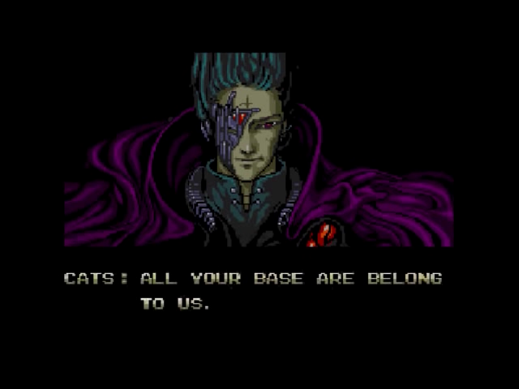

All good sysadmins eventually learn about using tail -F to tail files. Yes upper-case F is superior.
Around the time I wrote that article, I remember wanting to stream dmesg output too! The functionality wasn’t available without some sort of polling hack, but it turns out that kernel support for this actually landed around the same time in version 3.5.0!
Most GNU/Linux distros are probably running a new enough version by now, and you can now dmesg –follow (or dmesg -w):
$ dmesg -w
[1042958.877980] restoring control 00000000-0000-0000-0000-000000000101/10/5
[1042959.254826] usb 1-1.2: reset low-speed USB device number 3 using ehci-pci
[1042959.356847] psmouse serio1: synaptics: queried max coordinates: x [..5472], y [..4448]
[1042959.530884] PM: resume of devices complete after 976.885 msecs
[1042959.531457] PM: Finishing wakeup.
[1042959.531460] Restarting tasks ... done.
[1042959.622234] video LNXVIDEO:00: Restoring backlight state
[1042959.767952] e1000e: enp0s25 NIC Link is Down
[1042959.771333] IPv6: ADDRCONF(NETDEV_UP): enp0s25: link is not ready
[1048528.391506] All your base are belong to us.
As an added bonus, you can access this via journalctl –dmesg –follow too:
$ journalctl -kf
[snip]
Aug 28 19:58:13 hostname unknown: All your base are belong to us.
|  |
| Now we have a dmesg version too! |
Since my dmesg output wasn’t very noisy when writing this article, and since I didn’t write an “all your base” kernel module, you can actually test this functionality by writing to the kernel ring buffer:
$ sudo bash -c 'echo The Technical Blog of James is awesome! > /dev/kmsg'
Happy hacking!
James
PS: Since this is a facility that provides events, we could eventually write an mgmt config “fact” or resource around it!
You can hire James and his team at m9rx corporation.
You can follow James on Mastodon for more frequent updates and other random thoughts.
You can follow James on Twitter for more frequent updates and other random thoughts.
You can support James on GitHub if you'd like to help sustain this kind of content.
You can support James on Patreon if you'd like to help sustain this kind of content.
Your comment has been submitted and will be published if it gets approved.
Click here to see the patch you generated.
{kind=link}
Comments
Nothing yet.
Post a comment